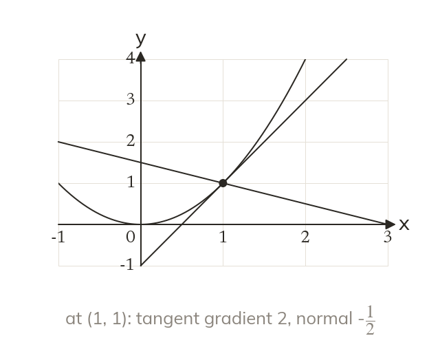
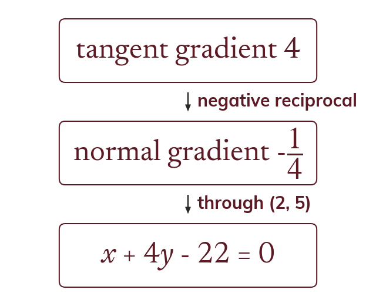
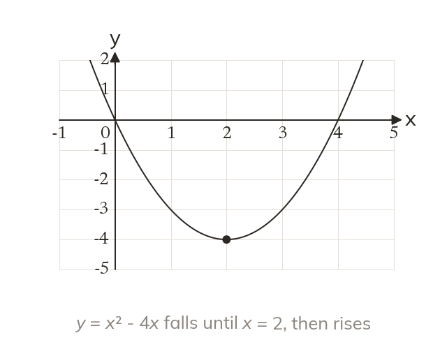
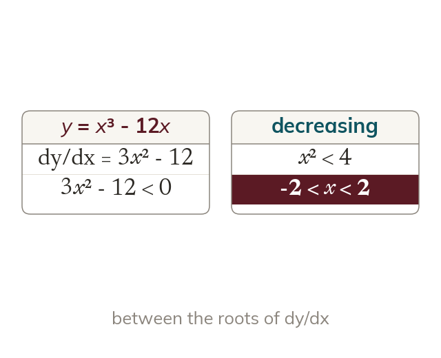

At right angles to the tangent
The normal is perpendicular to the tangent at the point. Its gradient is the negative reciprocal of the tangent's.
The normal is the line at right angles to a curve, and the sign of the gradient shows where a function climbs or falls. Both are quick consequences of being able to differentiate.
Work down the page at your own pace. Write every answer in your book first, then click to check it.
Read each card, then follow the worked examples one step at a time.

The normal is perpendicular to the tangent at the point. Its gradient is the negative reciprocal of the tangent's.

The normal's gradient goes into Clearing the fraction gives ax + by +
Pick an answer. If it's wrong, the feedback tells you which mistake it was.
Section Tangents and normals : the normal equations, and the problems that use where a tangent or normal meets the axes.
Read each card, then follow the worked examples one step at a time.

A function is increasing where dy/dx >
It is decreasing where dy/dx <

Increasing means solving dy/dx > as an inequality. A quadratic dy/dx needs a sketch of its sign.
Pick an answer. If it's wrong, the feedback tells you which mistake it was.
Section Increasing and decreasing functions : the questions finding where each function increases or decreases, and the proof that a cubic increases for all x.
Finished? Next lesson: 8.6 The Second Derivative.
Log in, then search for a code to practise that skill.